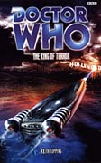

|
The King of Terror
|
BASIC PLOT DOCTOR COMPANIONS The Brigadier, aged 71 (and 121) (and see Continuity Cock-Ups) MATERIALISATION CIRCUIT Pg 47 Hollywood, July, 1999 PREPARATORY READING CONTINUITY REFERENCES "One day, he told anyone willing to listen, (perhaps quite soon) he intended to return to his happy ending in another half of the sky." As well as being a John Lennon reference, this is also a reference to the title of the book that reduced the Brigadier's age: Happy Endings. "'You're a hundred and twenty-one?' I asked. Despite his frailty he looked not a day over seventy-five." A result of the aforementioned age reduction from Happy Endings. Pg 3 "I've read them, yes. The invasion of the Cybermen. The Autons. The General Carrington affair. The Stahlman project." The Invasion, Spearhead from Space, The Ambassadors of Death, Inferno. (Not Terror of the Autons: these are papers released under the 80-year rule, and, it is implied, the information on Terror won't be released until next year.) See also Continuity Cock-ups for some timing issues. "Who, or what, were "the Waro"?" They were the villainous aliens from The Devil Goblins from Neptune, that's who. We are then treated to a long, rambling description which implies that the Waro will return in this book. They don't. And the Brigadier uses the phrase 'The Devil Goblins from Neptune,' which he neither heard nor used in the original book. Pg 4 "Then in a hoarse whisper he continued. 'The Doctor believes in good and fights evil. Though often caught up in violent situations, he is a man of peace. He is never cruel or cowardly. To put it simply, the Doctor is a hero.'" This is Terrance Dicks' mission statement for the Doctor, quoted or mis-quoted many times in both print Who in general and Beyond the Sun . "'Wonderful chaps,' he said. 'All of them.'" The Brigadier's oft-quoted line from The Five Doctors. Pg 5 "A former teenage protege, who, along with the Latvian dissident Kerensky, had been considered the world's leading authority on theoretical time travel." Kerensky appeared in City of Death. By the by, I don't think Topping means 'protege' (someone trained or advised by someone older and usually famous); I think he means 'prodigy' (someone with a great ability which is displayed when they are young). Pg 6 A representative from Burkina Faso appears, a Mr. Theydon Bois, which is surely a pseudonym, as is it's also a village in Essex, UK (winner of the Best Kept Village, 2004 award, if you care to know that). Pg 9 "Without Doctor Shaw, Professor Chesterton or Doctor Sutton we're stumbling in the dark." Liz Shaw (Spearhead from Space et al), Ian Chesterton (An Unearthly Child et al) and (presumably) Petra Sutton from Inferno (although she was a lot more qualified in the alternate universe, so perhaps this is a clue that this book takes place there). Pg 13 "In Redruth after all that palaver with the Cassuragian invasion." Uncertain reference. (Redruth was a local town and the name of a character in Rip Tide, but this is almost certainly not connected.) Pg 18 "Greyhound to Trap Five." UNIT call-signs are still the same. (Greyhound and the Traps were established in Invasion of the Dinosaurs.) Pg 21 "James Bond... Pfft. Lightweight! Put him in a jeep next to a sixty-foot robot and he'd be shaken not stirred." Robot. "'You know what's the only thing that's kept me sane for the last twenty years?' 'The wages?' 'No. Sitting down to watch a spy film and laughing at all the inaccuracies.'" This is, perhaps, an unfortunate line to put in a book which turns out to be riddled with inaccuracies. "His father had worked with the British Rocket Group in the Seventies on the Neptune missions." The Devil Goblins from Neptune. The British Rocket Group were first mentioned in Remembrance of the Daleks. Pg 23 Tegan and the Doctor are wondering around Oxford Circus. Tegan's been here recently, in The Crystal Bucephalus, but she doesn't mention it. On the Doctor's celery: "Many had thought about asking him why it was there. Few actually had." What a wonderfully doom-laden way of saying 'They all thought he was bonkers'. Peri actually does ask him in The Caves of Androzani. Pg 24 Reference to the Master. Pg 25 "'Where's [Turlough] gone, anyway?' 'To see an old friend, apparently. A solicitor in Chancery Lane.'" This is a Trion agent, as we will find out in Planet of Fire. Turlough beats him up. "'Last time it was the Tate Gallery, I remember,' said the Doctor." It's unclear when the Doctor last met the Brigadier at an art gallery in London. Pg 26 The Brigadier: "I encountered one of your successors a few weeks ago." Definitely not Battlefield, as Battlefield made it clear that the Brigadier had retired, but, in this book, he's been back with UNIT for 'over two years' (Pg 28). This may be a reference to the audio 'The Spectre of Lanyon Moor', or it may be an uncertain reference. "'How many [Doctors] have you worked with now? Just out of curiosity!' 'Nine.'" Nine? I'm anticipating a Christopher Eccleston book with the Brigadier in it now. And, in the absence of a Hartnell/Brigadier crossover, a David Tennant one. "Interesting. I bumped into one of them myself some time ago. Curious little chap." Cold Fusion. Pg 27 "'For the last month,' began the Doctor with an ambiguous smile, 'I've been trying to get a young chap back home to 1643. And what a right to-do that turned into. We were on a planet populated by walking reptiles... [and so on]'" This trip, with Will and Jane, was mentioned in The Hollow Men, but we've never seen it happen. "Before that, I saved a village in the West Country from annihilation by blowing up the church and destroying an alien representation of the devil. Sound familiar?" The Awakening. It will sound familiar to the Brigadier, because it's also a fair description of The Daemons. The Brigadier chats to Doris on his mobile. She was first mentioned in Planet of the Spiders, we see her in Battlefield and she's going to die sometime before The Shadows of Avalon. Also see Continuity Cock-ups. Pg 28 "I've got a small team working from an office in Covent Garden. I'm trying to get back to the original UNIT ethic. Investigating the unexplained, the unusual." This may be a barbed comment aimed at Battlefield, where UNIT were reduced to guarding a nuclear warhead in transit. It also sounds like the Brigadier's own Broadsword Unit from No Future. "Trying to stop alien invasions before they land on top of Nelson's Column." This may be a reference to No Future, where the TARDIS was disguised as Nelson's Column. It may just be because the Doctor and the Brigadier are sitting in Trafalgar Square. Pg 28 "'I'm seventy-one this year,' answered the Brigadier quickly. 'You know what they say about old soldiers?'" This references General MacArthur's speech ('Old soldiers don't die, they just fade away') and refers to the Brigadier's comment in Battlefield: 'Tell them I've decided to fade away'. See also Continuity Cock-ups. Pg 29 "He's a billionaire, the head of a company called International Communications." The similarities in the set-ups, names and acronyms of this firm and International Electromatics from The Invasion, is either deliberate or a large co-incidence. Pg 30 "In Little Hodcombe during three weeks of exploring the Dorset countryside." The Hollow Men makes it clear that, after returning Will to his own time, the crew spent some time in the village where The Awakening was set. "Tegan had learned from a chance remark that Turlough's mother was dead." Turlough's past would eventually be fully revealed in Planet of Fire. Pg 32 "Dad caught up with me and parcelled me off to live with his sister in England." Aunt Vanessa, who died horribly in Logopolis. Pg 34 "You get road rage too. Like that time on the M3, I thought you were going to ram that guy in the Citroen." It's possible that said guy was the Eighth Doctor, during the Caught on Earth arc. "You'd think that in the fourth biggest city in the world they'd give me more than a secretary and a sergeant, but there you go." UNIT's policy of under-manning is consistent with that seen in the series. Pg 36 "I've already arranged a PAL/NTSC conversion to be done overnight back at the factory." This may just be a reflection of the fact that the Telemovie was broadcast (and released on video) with cuts in the UK, resulting in many dedicated fans getting American NTSC versions sent over and then converted. It may not. Pg 47 Two observers witness the TARDIS's materialization: "'Radical,' noted one, leaving a space between each of the three syllables to emphasise just how impressed he was." This may be a pastiche of the famous scene in City of Death where John Cleese and Eleanor Bron have similar (but rather more British!) reactions to the TARDIS dematerializing. "'Nice effect. Computer-generated?' 'Colour Separation Overlay,' replied the Doctor dismissively.'" This relates to the production processes of Babylon 5 and Doctor Who respectively, the latter most notably in the 1970s. It's a silly conversation, though. On Hollywood: "'You've been here before?' asked Tegan. 'A while back,' noted the Doctor. 'I was trying to save the world.'" Dying in the Sun. Pg 49 "He'd talked his way out of confrontations with Cybermen, renegade Time Lords, even the Black Guardian of the universe." In Tegan's experience this was: Earthshock and/or The Five Doctors, Arc of Infinity and/or The Five Doctors, Enlightenment. Pg 50 "'Do you know Redborough at all? It's just south of...' 'Basingstoke. Yes I do, actually,' said the Doctor. 'I did some work down there once for...' He laughed at his inability to break the Official Secrets Act.'" The Devil Goblins from Neptune. The Doctor was reminded of his responsibilities to the Official Secrets Act in Time-Flight. Pg 56 introduces the allegedly hilarious Sons of Nostradamus: Hardcore SF fans turned terrorist (the Black Anoraks), who discuss things on alt.nerd.obsessive, while blowing up production companies who no longer make their favourite show. Methinks Topping is having something of a dig at a particular group of people. Pg 57 "[Jon Newton's] accent was pure English West Country." What is it with nutters from the West Country? What with The Awakening and K9 and Company, perhaps we should just section the lot of them. Pg 58 The Sons of Nostradamus's online tags 'Trilogy', 'Canon', and 'Ret-Con' are all references to Who fandom. Including people like me, it would seem. Pg 59 "The neon and plasticity fascinated him. It was, he thought, just like Trion. Before the revolution." We hear about the Trion revolution in Planet of Fire, where we also, it could be argued, see the neon and plastic. Pg 60 Turlough refers to himself as 'Junior Ensign Commander Vislor...' Planet of Fire. Pg 61 Apparently all American girls love the English accent: "I'm Eva, you want to have sex with me?" Blimey. That never happened to me when I was in America. To be fair, neither was I kidnapped and tortured by aliens. Pg 63 "He knew he'd been drugged. He'd seen similar results during the early days of the revolution when the insurgents had been taken to the Presidium." Trion again (Planet of Fire). Pg 68 On Turlough: "'He has been known to get himself captured on the odd occasion,' he noted with a wry grin." This was Turlough's main character trait in the programme as broadcast. There's something utterly uncaring about how the Doctor finds this funny. Turlough, probed and prodded, would probably not see the humorous side. Pgs 68-69 "Brigadier Lethbridge-Stewart was beginning to daydream about the little coffee shop opposite UNIT's second (or was it third?) central London HQ in Marble Arch." UNIT relocated more often that any other Military organization ever. In London, there was one UNIT HQ in Whitehall (Spearhead from Space, Blood Heat) and one in Kensington (No Future) at least. The Brigadier's inability to remember may also be reflected in his seeming inability to recall his own age. Pg 69 "He was vaguely aware of Sir Thomas Wonga, the UN's senior expert in the field, talking about the rumours that a Waro propulsion device had been found [...]" Sir Thomas Wonga is, surely, another pseudonym. The Waro were in The Devil Goblins from Neptune, but you'll know that by now. Brief reference to the Brigadier teaching Maths to Turlough, as he did in Mawdryn Undead. Pg 70 "'You're to be my assistant, apparently.' The Doctor produced the passes he'd been given by the Brigadier in London. 'Miss Jones, it says here.'" It seems that Tegan is using Jo's UNIT pass, except that this is Jo's married name. It might be a pass for Sam Jones from an unrecorded adventure, or (more likely) just a pass with a generic name. "Brave heart, Tegan." The Doctor said this to Tegan a lot. Pg 72 "Hands became pincers, heads became huge, domed insect-like skulls with antennae and small red eyes that seemed to feed on the room's new light. Within seconds, the entire conglomerate had been transformed. Into something inhuman." Like many Who monsters, the Jex like to burst through their human suits in order to provide a cliffhanger ending. The transformation here reminded me of the Slitheen (Aliens of London/World War Three) which is not necessarily an ideal recommendation. Pg 73 The Chapter title is 'UNIT Cutaway,' a reference to the alleged 'official' title of Mission to the Unknown: Dalek Cutaway. The structure of the Chapter - Doctorless, with a discovery of something hidden at the end of it - is similar to the episode. Pg 76 "That "Death of Yesterday" malarkey?" It's not clear what the connection is, but this was the title of one of the episodes of The Hartnell era. . It didn't make much sense then either. "It's not often you get an order to 'Westwain the Waston wawwior wobot'!" The Raston Warrior Robot (from The Five Doctors) appears to have turned up at Waterloo station at some point, almost entirely for the sake of this rather silly joke about people who can't pronounce the letter 'R' (in this case Terrance Dicks). "RHIP matey" Mike Yates used this abbreviation in Day of the Daleks. Pg 77 Mention of Benton, who, dialogue implies, appears to have been a homophobe. Maybe this explains Mike Yates being all girl-go-getting in The Devil Goblins from Neptune and yet outed as gay in Happy Endings - he knew how Benton would react and was acting all macho to compensate accordingly. (To be fair to Benton, Paynter and Barrington are not the world's most reliable narrators.) Pg 78 "Zygons, I think. There were a few hundred of them left over from the invasion. We went in with an artillery battalion but they'd gone to ground. We spent days tracking them. Picking off a few at a time." Terror of the Zygons, one assumes, but see Continuity Cock-Ups. "The first bug-hunt I saw was clearing up after the Ice Warriors fiasco in Northampton." Uncertain reference (maybe The Ultimate Adventure?) The term "bug-hunt" was used in Dragonfire. "I remember that. I was with Harry Sullivan's broadsword team at Porton Down when all that was happening." Harry Sullivan (Robot-The Android Invasion etc.). It was reported in Mawdryn Undead that Harry was doing somthing 'very hush-hush at Porton Down'. The Broadsword units were established by the Buddhist Brigadier in No Future, so it's a shame that so little of the other continuity matches between the two books. Pg 79 "'I was thinking about James Rankin.' 'Drill sergeant from Devesham?'" Devesham was the setting for The Android Invasion, and there was a Devesham space centre mentioned in The Dying Days. Pg 80 "Exactly. They're like sheep now. Malleable. Open to autosuggestion. It's exactly the same technique the Time Meddler used in the seventies with that pop concert malarkey." No Future. See Continuity Cock-Ups. Pg 81 "Last I heard he sits around the house most of the day watching the State Secrets video on the Cyber invasion. Bit of an embarrassment really." Presumably it's missing parts 1 and 4. The Invasion. Pg 85 The Chapter title is 'Semantic Spaces', a reference to a discussion of Kinda in Doctor Who: The Unfolding Text, itself referenced in the television story, Dragonfire. Pg 86 "'You've been in this city before?' asked Tyrone. 'A lifetime ago. Or four,' replied the Doctor." If he is talking about Dying in the Sun, then it's three lifetimes ago, but the First Doctor may have been here at some point in an unrecorded adventure as well. Pg 87 "Tegan provides me with a link to the realities of the universe. She's the soul of the TARDIS. And the heart. A brave heart." That phrase again. "'And Turlough?' asked Tyrone, stopping the car. 'He was sent to kill me. I greatly admired that!'" Mawdryn Undead. Pgs 87-88 "The Doctor, rightly, ignored the question and swung round, keeping his arm ramrod straight like a Dalek's eyepiece." That, surely, has got to qualify for the most gratuitous continuity reference to Daleks anywhere. Pg 88 "Temporal mechanics, quantum physics, fourth-dimensional tachyon studies. I scraped through. I was a grave disappointment to my parents." Not quite what was said in Divided Loyalties (don't get me started). We know the Doctor scraped through his exams (with 51%) from The Ribos Operation. The Doctor's father was mentioned in The Telemovie, and the discussion and debate that has sprung out of that statement are too detailed to go into here. "Someone asked me once why I travel the universe in a craft that should have been put into mothballs millennia ago. I told them that there is great evil out there, inconceivable evil. And that it must be fought." Kind of the Doctor's famous speech from the Moonbase, but not in quite the right context. Let's assume he was so proud of the phrase that he used it repeatedly. God knows, fandom has done. Pg 90 "'What about International Electromatics?' she asked. 'You'd think people would have learned lessons from that.'" As mentioned above, InterCom is frequently compared to, and has lots of similarities in structure to, International Electromatics from The Invasion. It's possible that there's some post-modern thing going on here, with the villains in the first and (presumably) last UNIT stories of the twentieth century being very similar, thus indicating that humans have not really learned anything at all. Of course, I may be reading far more into this than it deserves. Pg 91 Private Natalie Woolridge: "It's an honour to meet you. I believe you knew my uncle, Martin Beresford." This is presumably Major Beresford from The Seeds of Doom (and he was, presumably, formerly Lieutenant Beresford in The Face of the Enemy). Natalie apparently got the job through her uncle, which also invites comparison with Jo Grant's method of job-hunting: to whit, nepotism. Pg 93 The Doctor claims to have met Chung Sen during the 1970s, but this is unrecorded. Pg 99 As Turlough is brutally tortured, he has cause to remember Brendon School (Mawdryn Undead) and Trion (Planet of Fire). I may have been able to tell you more, but have no desire to read this page ever again. Pg 100 "Above him, whirring at several thousands of revolutions a second, was a bright, diamond-sharp drill bit. And it was being lowered towards his face." This is a direct take-off from a sequence in The X-Files episode 'Ascension'. There are a number of other references to the X-Files throughout, but this is the most blatant. Pg 103 "[...] when the Doctor had pursued the Master through Berlin during the night of the long knives." Uncertain reference. Pg 104 "Would you prefer that we left the exploration of space to the Chinese?" There are frequent references throughout to China's increasing presence in space, but I'm damned if I can work out why. "A predecessor of mine did meet you in the early Seventies at MIT. Tried to recruit you to UNIT, I understand." Uncertain reference. The Doctor's 'predecessor' may well be his Third incarnation. Pg 105 "Still, I dare say you may get to Mars one day. We've been as far as Neptune, don't you know?" Indeed, from whence came the Devil Goblins. It's possible that they may have been called the Waro, but as I haven't been reminded for at least 15 pages, I may be wrong. Pg 108 The Doctor on his medical capabilities: "I'm a bit out of practice [...] but I'll do what I can." The Moonbase established that the Doctor had a medical degree, but he gained it in the nineteenth century and, in his personal timescale, a long time before the events of The Moonbase. Pg 110 Another reference to International Electromatics from The Invasion, in particular the fact that UNIT took all their technology and used it for themselves. "And when he started reading the bug-eyed ranting of some whippersnapper politician named Hatch, he was for once actually delighted to be interrupted by UNIT business." This is Matthew Hatch from The Hollow Men. Pgs 110-111 "And, indeed, the Brigadier did. He remembered a conversation on a summer Sunday afternoon on a south London river bank almost thirty years earlier, with a bright sky, the laughter of children and an exiled Time Lord wearing a velvet smoking jacket." This is one of the final sequences in The Devil Goblins from Neptune. Pg 111 "'You suspected that aliens had infiltrated the CIA thirty years ago,' he said. 'It's always been in the back of my mind.' 'Oh Brigadier,' began the Doctor. 'If only it were that simple. The situation is much more complicated than that.'" Indeed - it never seems to make full sense to me, but, particularly given Control's seeming lack of aging, it appears that the American CIA are closely connected to the Gallifreyan one. That said, Control is still around after the destruction of Gallifrey in The Ancestor Cell (he's in Escape Velocity, Trading Futures and Time Zero) and doesn't appear to be one of the four survivors as envisaged in The Gallifrey Chronicles, so it's not really clear what's going on at all. "A thought ran through his mind - something Nietzsche had once said about sleeping with dragons." As the NAs proved, Nietzsche's always the man you want to quote from! Actually the full quote is "The man who fights too long against dragons becomes a dragon himself," which is a rephrasing (Nietzsche's own) of the famous "He who battles against monsters..." quotation that riddled the New Adventures. Doesn't mention sleeping though, as far as I can tell. Pg 112 Paynter and Barrington's target practice includes a Julsaen, a Zygon and a Cyberman. We've never heard of the Julsaen before. Terror of the Zygons and The Bodysnatchers. The Tenth Planet et al. Paynter, on the Doctor: "He's about the fourth one I've met." Presumably the previous three were the Third (while training), the Fourth (Robot) and the Seventh (Battlefield). Maybe others that we don't know about. Pgs 112-113 "The Doctor used to be a big geezer with teeth and curls. Later, he changed into someone else. The Brigadier tried to explain it to me but I got a headache. He was using the metaphor of a caterpillar changing into a butterfly, only the Doctor does it again and again." This the same metaphor used by the Doctor to describe his first regeneration in The Power of the Daleks. Pg 113 "Mark, mate. Aliens have landed on Earth at a rate of one mothership with supporting killing machines every couple of months for the last thirty-odd years. Everybody knows. Half of them have been televised live! It's just people don't talk about it..." The Dying Days was televised live, and this one's about to be. See Continuity Cock-Ups. Reference to Daleks. Pg 114 There's another reference to the annoying Who universe Beatles, who are on their Millennium tour, although Ringo Starr has now drowned. These also popped up in The Devil Goblins from Neptune. See also Continuity Cock-Ups. Pg 117 "He was back in Brigadier Lethbridge-Stewart's trigonometry class, cleverer (by an irregular fraction) than anybody else in the room." Mawdryn Undead again. Pg 118 refers to Ibbotson, who we met in Mawdryn Undead. Pgs 125-126 "'We both thought the same about Jo Grant once upon a time,' replied the Doctor. For a second there was a sad look in the Brigadier's eyes. 'Poor Miss Grant,' he said at last." This, one presumes, relates to her kidnap by the mysterious Crystalline entities in Sometime Never..., although since their destruction, it now might never have happened. Or perhaps they've just learnt of her divorce, which we found out about in Genocide Pg 126 "The Doctor thought about pursuing the matter and then accepted that the tides of time wash everyone clean. Including himself. Perhaps especially him." I really don't like this splitting everything up into separate sentences. It's annoying. Very much so. The 'tides of time' line was originally used in Timelash, although it's also the title of the famous fifth Doctor comic strip. "They're good people, Doctor. The Chestertons, Miss Shaw, the Suttons." Ian and Barbara, Liz and, again one presumes, Greg and Petra (then Williams) Sutton from Inferno. See also Continuity Cock-Ups. Pg 128 "'Indoctrination,' said Lethbridge-Stewart. 'An invasion from within... We've seen all this before.'" The Invasion. Pg 131 Tegan's thoughts on Johnny Chester: "She had the ridiculous feeling that this was somebody she had known for years, intimately. Then Tegan had an even more preposterous feeling that he was somebody she would come to know." This ties into the Cornell-Topping theory that Tegan and Johnny Chess (Ian and Barbara's son) would get married. But see Continuity Cock-Ups. It's also a paraphrase of Adric's thoughts on Tegan herself when he sees her on the scanner in the novelisation of Logopolis. Tegan has "found a book based on some old science-fiction TV show to read." I wonder which one... Probably Professor X. Pg 132 The other members of Johnny Chess's band, the Star Jumpers, were Marty and Kel. Presumably this is meant to be Martin Day and Keith Topping. Pg 147 "'I'm sorry about your friend,' said Tegan, sick of the pointless small talk. 'I've seen someone close to me die and I know what you're going through if that's any consolation.'" She means Adric in Earthshock. Pg 148 "She was thinking of Aunt Vanessa now. How had she coped with that? By getting in a time machine and being kidnapped, that's how." Logopolis. Pg 149 "A flood of memories threatened to drown him. Of Area 51. Nevada, the Nedenah and the sarcastic son of a bitch who was standing before him now, looking not a day older than he had in 1970." This'll all be from The Devil Goblins from Neptune, of course. Pg 150 "The Doctor and the Brigadier both sat down, gently, as though terrified that the plush leather armchairs were about to eat them alive." Terror of the Autons. Pg 152 Reference to International Electromatics again (The Invasion) and the CIA being a front for an alien-controlled operation. Pg 153 "'Enlightenment,' said Control. 'It's a wonderful thing, so it is!'" Probably a deliberate reference to Enlightment, an adventure from a few weeks ago from the Doctor's perspective. Pg 157 Reference to Mike Yates, currently in Tibet and, therefore, still into the meditation way after all these years. Pg 158 "Turlough can survive easily enough in Earth's atmosphere, but it makes him asthmatic and prone to bouts of nausea and migraine..." As, I imagine, does prolonged torture. Turlough's ill-health is a new one on me. Further down the page, the Doctor makes it clear that he doesn't know which planet Turlough is from. He won't find out until Planet of Fire. Pg 161 "You want to read the Waro mission logs, it's a textbook case-file for this part of the world." You almost get the feeling that they fly near Area 51, just so we can get another Devil Goblins from Neptune reference in here. Pg 162 "I doubt you'd enjoy yomping through the desert in high heels and a miniskirt." Yomping was a hobby of Who Producer, John Nathan-Turner, and, for some reason, this became a long-running fan joke. I've never been completely certain why. Yomping is backpacking, basically. Pg 168 "They're from the Cassiopeia system on the other side of the galaxy." The Doctor was going to take Sarah-Jane to the planet Cassiopeia at the end of The Seeds of Doom, but it may not be the same place. "'Yes,' noted the Doctor. 'I ran into them [the Jex] on an ice world in the star system Rifta.'" The Rifta System is a reference to The Awakening, where it’s the location of Hakol, the planet the Malus comes from. (With thanks to Lee Sherman.) Reference to Daleks and Cybermen Pgs 168-169 "(Even worse than the conditions she and Turlough had endured on Terminus)" In Terminus, unsurprisingly. Pg 169 "The shape's all wrong for a Cyber reconnaissance ship." Cybermen, obviously. Pgs 178-179 Ryman states that the Canavitchi have been interfering in human development for the last thousand years. You and everyone else, mate. Ryman claims the credit for The Turin Shroud, the Knights Templar, the Spanish Inquisition, the War of Independence, the Wall Street Crash, the slowing down of scientific development and Nostradamus' prophecies. Amongst other things, this is actually quite offensive. The comment 'We burned the instructions for how to build a pyramid in six easy stages,' however, takes it to new levels of ludicrousness, so I can no longer take any of Ryman's claims particularly seriously. Pg 188 "I accessed the TARDIS databanks from UNIT last night using your space-time telegraph for the file transfer." Revenge of the Cybermen/Terror of the Zygons. Also see Continuity Cock-Ups. Pg 193 The sequence involving Tegan's bad experience with assassins in the desert and her need to resort to violence ends with the line "For Tegan Jovanka it would never be all over." This prefigures her decision to depart in Resurrection of the Daleks. Pg 204 The slang here "Shut your bleeding cake-hole," "Don't get your knickers in a knot, sport," "I'm sorry, me old mucker," I wasn't looking to cobber up with you," and so on is about the nadir of the dialogue writing in this book, and, quite possibly, the whole of literature. Pg 217 "Tegan sat with him. She had cried when she saw Dave Milligan's body again, which horrified her as she'd only cried once when Adric died." Earthshock. Pg 226 "'Enough,' growled the thing that had been Theydon Bois. 'What are you?' 'An exile,' the Doctor told him truthfully." This is the case, as the Doctor is once again on the run from his own people as of The Five Doctors. Pg 228 Mention of Daleks again. Pg 234 "The Doctor gave Lethbridge-Stewart a sad glance. 'I'm not a man of violence,' he said simply." This once again is a reference to the Terrance Dicks mission statement for the Doctor but at this point in the narrative it just makes the reader shout 'Then DO something!' at the character. Pg 238 "Take a man around the rear, Sergeant." This is, I am certain, a deliberate nod to the occasional moments of dialogue in the programme which can also be read to read in a different meaning. It's the sort of thing that Topping himself would have put in the 'Double-Entendres' section of The Discontinuity Guide. IE get another name-check. Pg 240 "'I'm expecting total war, Captain,' the Doctor answered sadly. 'Annihilation on a scale that this part of the galaxy has never known before. And all we can do is watch it happen.'" And indeed, that is all they do. "'I saw the charge of the Light Brigade,' the Doctor said wistfully, remembering the valley in the Crimea and the brave horsemen blown to pieces by roaring Russian cannons. 'Magnificent folly. If you'll excuse such an unreconstructed oxymoron.'" Evil of the Daleks. Topping criticizing other people's writing, by this point in the book, leaves a nasty taste in the mouth. (And, for the record, the charge of the Light Brigade is described as 'magnificent folly' in various records and accounts of the battle, not just the Doctor's, so the Second Doctor was probably quoting.) Pg 241 The Doctor mentions that he has been at Agincourt, Waterloo, Rorke's Drift, Passchendaele, El Alamein and My Lai. In order: Possibly Managra (it's recreated there), the Third Doctor mentions talking to both Bonaparte and Wellington, not sure about Rorke's Drift, Passchendaele in The War Games, perhaps, and other two remain unrecorded. Pg 251 "'... He was a servant of the Terrible Zodin,' the Doctor confided. 'Utterly without pity, but with a strange predilection for cream cakes. We got on rather well...'" The Terrible Zodin was first mentioned in The Five Doctors, and has made too many cameo non-appearances in the books to mention here. It's uncertain who the Doctor is actually referring to at this point. Pg 257 "At what point does battling with monsters make you a monster yourself?" This misquote of the other famous Nietzsche line prefigures the Doctor of the NAs. In our terms, we first saw the quote in The Left-Handed Hummingbird. Pg 258 Reference to Brendon School and the Black Guardian. Mawdryn Undead, Terminus and Enlightenment. Pg 265 "'You were right, Doctor, the universe is full of the most terrible evil. And it must be fought.' 'Just so long as you don't start looking for it where it doesn't exist,' the Doctor said sadly. 'That way lies madness, the Salem witch trials and Nazi Germany.'" That's the Moonbase quote again, although how the Brigadier knows it is beyond me. Also The Witch Hunters, and loads of other novels and audios about the Second World War. Pg 272 "The graffiti [on the TARDIS] would wash off, the Brigadier assured him." The TARDIS is also graffitied in Paradise Towers and Aliens of London/World War One. In both of those cases, it is washed off by the perpetrators. Pg 275 "Tommy Bruce asked me the same thing many times Frank. He was always looking for a way out." Bruce was the CIA agent in, you guessed it, The Devil Goblins from Neptune. OLD FRIENDS AND OLD ENEMIES Control, from The Devils Goblins from Neptune pops up. He will later appear in Escape Velocity, Trading Futures and Time Zero. Julia and Robert Franklin appeared in The Devil Goblins from Neptune and The Hollow Men. Johnny Chester is also known as Johnny Chess. He is the son of Ian and Barbara Chesterton, was first mentioned in Timewyrm: Revelation, and he's seen as a young boy in Byzantium! He also, at some point in her future and (at this point, his past) is married to Tegan, as established in The Hollow Men NEW FRIENDS AND NEW ENEMIES Back in 1999: Chung Sen. Surviving members of UNIT: Geoff Paynter, Sergeant Hill, Private Natalie Woolridge, Murphy. Of IC, only Michelle Stonebringer survives, and probably won't for long. Of the CIA: Frank Greaves, Dwayne Landmott Surviving members of the Sons of Nostradamus include Bill Quay, Nigel Dunkley, Sam Danvers, Lynda Bowmar. They may be about to get the death sentence for terrorism, however. Turlough's new friends at the LAPD: Mike and Dan. The Commander of the Jex League.
CONTINUITY COCK-UPS PLUGGING THE HOLES [Fan-wank theorizing of how to fix continuity cock-ups] FEATURED ALIEN RACES The Canavitchi, from the planet Fen'vetch Suxa Canavitch, in the Pleiades system. They have some empathic powers and are green and beautiful, slender and frail-looking, but still have claws and fangs. FEATURED LOCATIONS Westcliffe Retirement Home, Sussex, 28th September, 2050 Tokyo, 1st July, 1999 Much of the rest of the book takes place in the few days from 3rd July, 1999 onwards: Schipol Airport, Amsterdam Flying over the Atlantic in a 747 London, including Oxford Street, the National Portrait Gallery, Trafalgar Square and a pub in Putney. Los Angeles. San Fransisco's Transamerica Pyramid and the CIA building. A Bullet train in Tokyo. Death Valley, and a USAAF base near Boulder City. An email is sent by the Brigadier on 10th January, 2003 (Pg 269). His complete memos, letter and emails will be published in 2052. IN SUMMARY - Anthony Wilson |
|
 |